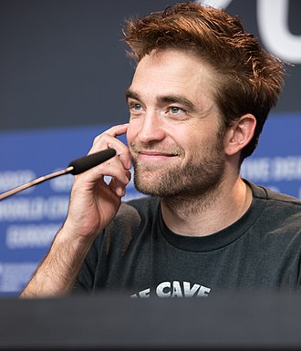

John David Washington (Los Angeles, 28 luglio 1984) è un attore ed ex giocatore di football americano statunitense.
Washington è nato nel quartiere Toluca Lake di Los Angeles, in California, figlio dell'attore Denzel Washington e Paulette Pearson.
All'età di nove anni è apparso come uno studente in una classe nel quartiere di Harlem nel film del 1992 Malcolm X, dove suo padre svolge il ruolo di protagonista.[1] Washington ha poi frequentato la Campbell Hall School a Los Angeles raggiungendo ottimi risultati nel football americano, nel basket e nella corsa.
Robert Pattinson

Robert Pattinson, all'anagrafe Robert Douglas Thomas Pattinson (Londra, 13 maggio 1986), è un attore britannico.
Ha iniziato la sua carriera cinematografica interpretando Cedric Diggory nel film Harry Potter e il calice di fuoco (2005).
Nel 2008 è stato scelto per interpretare il vampiro Edward Cullen nella saga cinematografica di Twilight, trasposizione dell'omonima serie letteraria, composti da cinque film tra il 2008 e il 2012, che hanno guadagnato un totale complessivo di oltre 3,3 miliardi di dollari in tutto il mondo, ruolo che ha portato Pattinson alla fama mondiale e lo ha inserito tra gli attori più pagati al mondo.